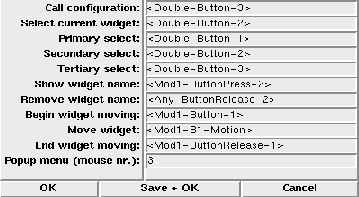

This dialog box provides access to the bindings that are used by XF . Most bindings in XF can be adapted by the user, to allow XF to work with different window manager configurations.

Figure: The procedure XFProcOptionsBindings
The single options have the following meanings (some option names may be abbreviated):
Option name & Purpose